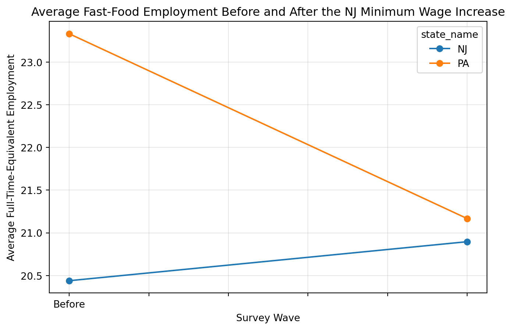

import pandas as pd
import numpy as np
import matplotlib.pyplot as pltReplicating Card and Krueger (1994)
Minimum Wages and Employment in New Jersey and Pennsylvania
Introduction
Card and Krueger (1994) study whether a rise in the minimum wage reduces employment in the fast-food industry. In April 1992, New Jersey increased its minimum wage from $4.25 to $5.05, while neighboring Pennsylvania did not change its minimum wage.
This setting creates a natural experiment. By comparing employment changes in fast-food restaurants in New Jersey and Pennsylvania before and after the policy change, the paper estimates the causal effect of the minimum wage on employment. The paper’s main finding is that the increase in the minimum wage did not reduce employment.
Data and Setup
The dataset contains 410 fast-food restaurants from New Jersey and Pennsylvania. The codebook shows that public.dat is a fixed-width file, so I read it using column positions from the codebook.
colspecs = [
(0, 3), # SHEET
(4, 5), # CHAIN
(6, 7), # CO_OWNED
(8, 9), # STATE
(10, 11), # SOUTHJ
(12, 13), # CENTRALJ
(14, 15), # NORTHJ
(16, 17), # PA1
(18, 19), # PA2
(20, 21), # SHORE
(22, 24), # NCALLS
(25, 30), # EMPFT
(31, 36), # EMPPT
(37, 42), # NMGRS
(43, 48), # WAGE_ST
(49, 54), # INCTIME
(55, 60), # FIRSTINC
(61, 62), # BONUS
(63, 68), # PCTAFF
(69, 70), # MEALS
(71, 76), # OPEN
(77, 82), # HRSOPEN
(83, 88), # PSODA
(89, 94), # PFRY
(95, 100), # PENTREE
(101, 103),# NREGS
(104, 106),# NREGS11
(107, 108),# TYPE2
(109, 110),# STATUS2
(111, 117),# DATE2
(118, 120),# NCALLS2
(121, 126),# EMPFT2
(127, 132),# EMPPT2
(133, 138),# NMGRS2
(139, 144),# WAGE_ST2
(145, 150),# INCTIME2
(151, 156),# FIRSTIN2
(157, 158),# SPECIAL2
(159, 160),# MEALS2
(161, 166),# OPEN2R
(167, 172),# HRSOPEN2
(173, 178),# PSODA2
(179, 184),# PFRY2
(185, 190),# PENTREE2
(191, 193),# NREGS2
(194, 196) # NREGS112
]
names = [
"sheet","chain","co_owned","state","southj","centralj","northj","pa1","pa2","shore",
"ncalls","empft","emppt","nmgrs","wage_st","inctime","firstinc","bonus","pctaff",
"meals","open","hrsopen","psoda","pfry","pentree","nregs","nregs11",
"type2","status2","date2","ncalls2","empft2","emppt2","nmgrs2","wage_st2",
"inctime2","firstin2","special2","meals2","open2r","hrsopen2","psoda2",
"pfry2","pentree2","nregs2","nregs112"
]
df = pd.read_fwf("public.dat", colspecs=colspecs, names=names)
df.head()| sheet | chain | co_owned | state | southj | centralj | northj | pa1 | pa2 | shore | ... | firstin2 | special2 | meals2 | open2r | hrsopen2 | psoda2 | pfry2 | pentree2 | nregs2 | nregs112 | |
|---|---|---|---|---|---|---|---|---|---|---|---|---|---|---|---|---|---|---|---|---|---|
| 0 | 46 | 1 | 0 | 0 | 0 | 0 | 0 | 1 | 0 | 0 | ... | 0.08 | 1 | 2 | 6.50 | 16.50 | 1.03 | . | 0.94 | 4 | 4 |
| 1 | 49 | 2 | 0 | 0 | 0 | 0 | 0 | 1 | 0 | 0 | ... | 0.05 | 0 | 2 | 10.00 | 13.00 | 1.01 | 0.89 | 2.35 | 4 | 4 |
| 2 | 506 | 2 | 1 | 0 | 0 | 0 | 0 | 1 | 0 | 0 | ... | 0.25 | . | 1 | 11.00 | 11.00 | 0.95 | 0.74 | 2.33 | 4 | 3 |
| 3 | 56 | 4 | 1 | 0 | 0 | 0 | 0 | 1 | 0 | 0 | ... | 0.15 | 0 | 2 | 10.00 | 12.00 | 0.92 | 0.79 | 0.87 | 2 | 2 |
| 4 | 61 | 4 | 1 | 0 | 0 | 0 | 0 | 1 | 0 | 0 | ... | 0.15 | 0 | 2 | 10.00 | 12.00 | 1.01 | 0.84 | 0.95 | 2 | 2 |
5 rows × 46 columns
Cleaning the Data
Following the paper, I construct full-time-equivalent employment as:
\[ FTE = \text{full-time workers} + 0.5 \times \text{part-time workers} + \text{managers} \]
For stores that were permanently closed in the second wave, employment is set to 0.
# convert everything numeric just in case
for c in df.columns:
df[c] = pd.to_numeric(df[c], errors="coerce")
# state label
df["state_name"] = np.where(df["state"] == 1, "NJ", "PA")
# before and after employment
df["fte_before"] = df["empft"] + 0.5 * df["emppt"] + df["nmgrs"]
df["fte_after"] = df["empft2"] + 0.5 * df["emppt2"] + df["nmgrs2"]
# set employment to 0 for stores coded as permanently closed / other closures
df.loc[df["status2"].isin([3, 4, 5]), "fte_after"] = 0
# keep stores with observed first-wave employment
df[["state_name", "fte_before", "fte_after", "wage_st", "wage_st2", "status2"]].head()| state_name | fte_before | fte_after | wage_st | wage_st2 | status2 | |
|---|---|---|---|---|---|---|
| 0 | PA | 40.50 | 24.0 | NaN | 4.30 | 1 |
| 1 | PA | 13.75 | 11.5 | NaN | 4.45 | 1 |
| 2 | PA | 8.50 | 10.5 | NaN | 5.00 | 1 |
| 3 | PA | 34.00 | 20.0 | 5.0 | 5.25 | 1 |
| 4 | PA | 24.00 | 35.5 | 5.5 | 4.75 | 1 |
Replicating a Main Result
A simple way to replicate the paper is to compare average employment before and after the minimum wage increase in New Jersey and Pennsylvania.
summary = df.groupby("state_name")[["fte_before", "fte_after"]].mean().round(3)
summary["change"] = (summary["fte_after"] - summary["fte_before"]).round(3)
summary| fte_before | fte_after | change | |
|---|---|---|---|
| state_name | |||
| NJ | 20.439 | 20.896 | 0.457 |
| PA | 23.331 | 21.166 | -2.165 |
This table shows the average employment level in each state before and after the policy change.
Difference-in-Differences Estimate
The key comparison is the difference-in-differences estimate:
\[ (\text{NJ after} - \text{NJ before}) - (\text{PA after} - \text{PA before}) \]
nj_before = df.loc[df["state_name"] == "NJ", "fte_before"].mean()
nj_after = df.loc[df["state_name"] == "NJ", "fte_after"].mean()
pa_before = df.loc[df["state_name"] == "PA", "fte_before"].mean()
pa_after = df.loc[df["state_name"] == "PA", "fte_after"].mean()
did = (nj_after - nj_before) - (pa_after - pa_before)
print("NJ before:", round(nj_before, 3))
print("NJ after: ", round(nj_after, 3))
print("PA before:", round(pa_before, 3))
print("PA after: ", round(pa_after, 3))
print("Difference-in-differences estimate:", round(did, 3))NJ before: 20.439
NJ after: 20.896
PA before: 23.331
PA after: 21.166
Difference-in-differences estimate: 2.623If this estimate is positive or close to zero, it supports the paper’s main conclusion that the increase in the minimum wage did not reduce employment.
Additional Analysis: A Graph
As an additional analysis, I present the employment changes graphically.
plot_df = summary[["fte_before", "fte_after"]].T
plot_df.index = ["Before", "After"]
plot_df.plot(marker="o", figsize=(8,5))
plt.title("Average Fast-Food Employment Before and After the NJ Minimum Wage Increase")
plt.xlabel("Survey Wave")
plt.ylabel("Average Full-Time-Equivalent Employment")
plt.grid(True, alpha=0.3)
plt.show()
The graph makes the comparison more intuitive. If New Jersey employment had fallen sharply relative to Pennsylvania, we would expect to see a noticeably worse trend for New Jersey after the policy change. Instead, the pattern is much more consistent with the original paper’s conclusion.
Interpretation
The difference-in-differences estimate compares the employment change in New Jersey to the employment change in Pennsylvania. This helps account for broader economic conditions that affected both states at the same time.
My replication supports the paper’s main finding: the New Jersey minimum wage increase did not lead to a decline in employment in fast-food restaurants.
Conclusion
This replication revisits one of the most influential papers in empirical economics. Card and Krueger (1994) challenged the conventional view that higher minimum wages necessarily reduce employment.
Using the New Jersey-Pennsylvania fast-food dataset, I replicated the core comparison in the paper and visualized the employment changes. The results are consistent with the original study and illustrate the value of natural experiments for causal inference.